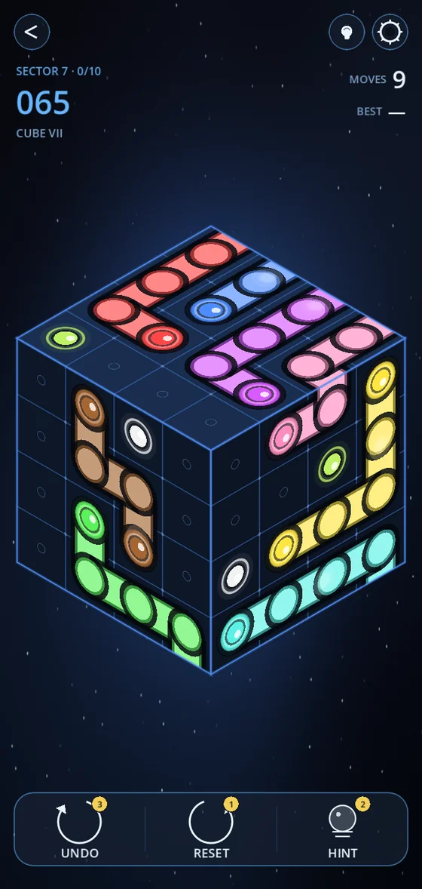
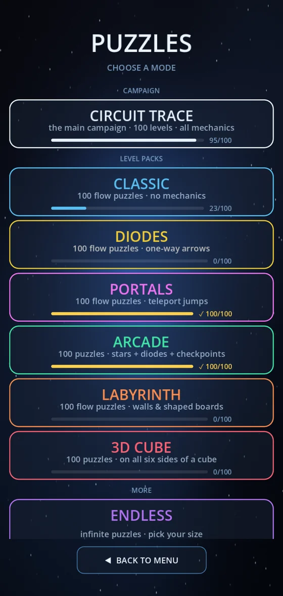

Versie 1.9.9 brengt het meest bijzondere pakket dat Circuit Trace tot nu toe heeft: 3D Cube, 100 flow-puzzels die om alle zes de zijden van een kubus lopen. Daarnaast krijgt de game een nieuw icoon en is een scrolprobleem in het Puzzels-scherm opgelost. Dit is er nieuw, en zo kwam er een kubus in een 2D-puzzelspel.
Nieuw: 3D Cube
De regels ken je: verbind elk paar stippen van dezelfde kleur, laat lijnen elkaar nooit kruisen en vul elk vakje. Het verschil zit in het bord. Elke zijde van de kubus is een klein raster, en de zes zijden sluiten aan elkaar aan. Trek je een lijn naar de rand van een vlak, dan loopt hij gewoon door op het volgende.
Je ziet steeds drie zijden. Veeg op een lege plek om de kubus te draaien, of sleep een lijn van de rand af naar een zijde die je niet ziet: de kubus rolt mee en je lijn gaat mee, zonder dat je je vinger optilt. Het eerste level laat beide bewegingen zien met een geanimeerde hand.


Het pakket heeft 10 sectoren. De eerste vijf gebruiken een raster van 3×3 per zijde (54 vakjes), de laatste vijf 4×4 (96 vakjes). Binnen elk formaat worden het steeds minder kleuren, dus de lijnen worden langer en lopen om meer zijden heen. 3D Cube is gratis, onder GAME MODES → 3D CUBE.
Hoe we een kubus in een 2D-game bouwden
Circuit Trace is een 2D-game, en we wilden niet alles in 3D herbouwen voor één modus. Dat bleek ook niet nodig. De kubus wordt zonder perspectief getekend, dus elk zichtbaar vlak is gewoon een plat raster dat schuin en platgedrukt is. Elk vlak krijgt één 2D-transformatie, en de gewone tekencode van het bord schildert er direct op. Lijnen, gloed, thema's en de FX-packs werken daardoor allemaal op de kubus, want het is dezelfde code.
De spellogica hoefde nog minder te veranderen. Voor de game is een kubus één lange strook van zes vlakken, plus een tabel die zegt welke vakjes over de randen aan elkaar grenzen. Al het andere (slepen, ongedaan maken, hints, de score) werkt precies zoals op een plat bord.
"Een kubus is gewoon zes borden die het eens zijn over wie hun buren zijn."
De levels komen uit dezelfde generator en puzzelsolver als de rest van de game, nu met de burentabel van de kubus. Elk level is gecontroleerd op één nette oplossing en beoordeeld op hoeveel denkwerk het kost, en alle 100 zijn voor de release automatisch uitgespeeld. In het eerste prototype moest je je lijn loslaten zodra de kubus draaide. Op een echte telefoon voelde dat hakkerig, dus in de definitieve versie blijft de lijn de hele weg in je vinger.
Een nieuw icoon, en een oplossing
- Nieuw app-icoon. Drie neonlijnen op een raster in een zeshoek, die elk hun eigen paar verbinden zonder te kruisen. Nu zie je in één oogopslag waar de game over gaat.
- Het Puzzels-scherm scrolt weer. Met zeven pakketten is de lijst langer dan de meeste schermen, en vegen vanaf een kaart scrolde niet. Dat werkt nu wel.
- Het eenmalige "wat is er nieuw"-bericht stelt nu 3D Cube voor, met een knop die je er direct naartoe brengt.
🧊 Nieuw met de kubus?
Draai hem eerst helemaal rond voordat je iets tekent. Een kubus heeft geen hoeken of randen om op te leunen, dus vaak bepaalt een stip aan de achterkant je eerste zet. Meer tips staan in de 3D Cube-gids op circuittrace.app (Engels).
🧊 Speel de update
700+ puzzels in 7 levelpakketten, waaronder de nieuwe 3D Cube. Gratis op Google Play, met optioneel Remove Ads voor €3,99.